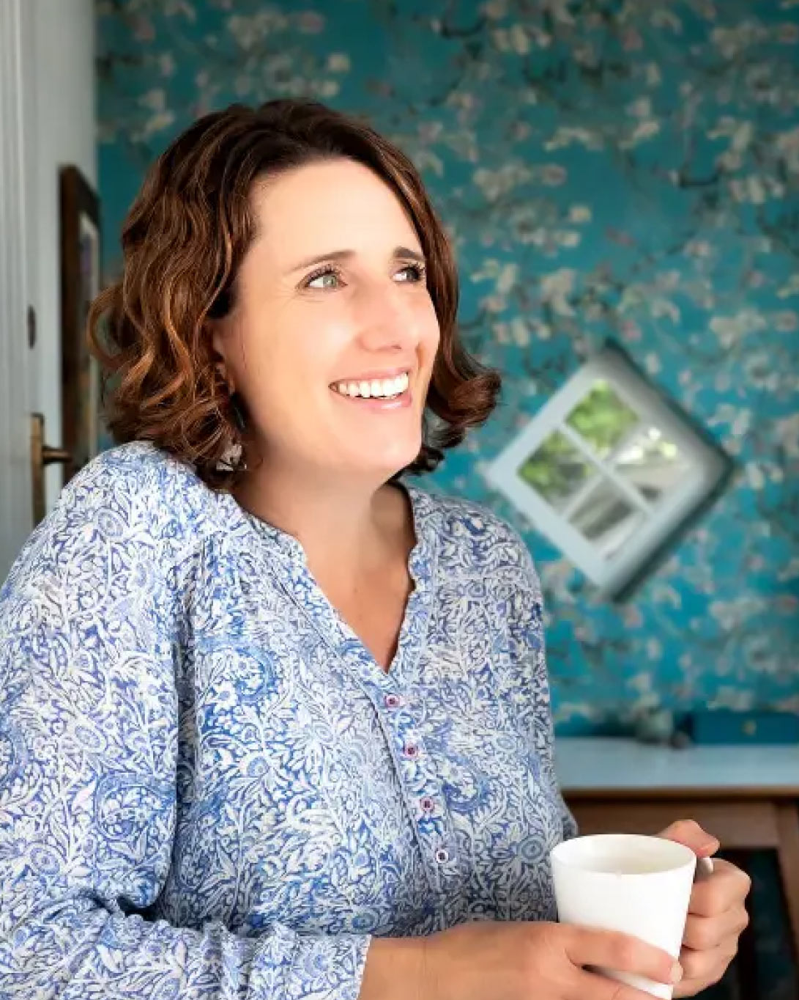

The Approach
Mind Coaching
Quantum Energy Coaching (QEC) works on the subconscious level of mind to free you from:
- Self-limiting beliefs
- Behaviour patterns
- Past trauma
- Physical conditions
- Internal stress
“The only change that is radical and quick is on the subconscious level of mind.”
What is QEC?
A unique, clinically usable approach.
QEC was developed by Dr Melanie Salmon and is the culmination of a lifetime of searching for the best ways to heal. Combining cutting-edge neuroscience with the principles of Gestalt psychotherapy, QEC adopts the practices that have been proven to work.
It works rapidly to change long-held limiting beliefs and heal past trauma by “rewiring” the neural pathways in the brain.
We work mainly with the subconscious mind.
Your Process
You have full control of the process.
You choose what to work on and the pace you are comfortable with. The practitioner is simply there to “hold the space”, gently guiding and assisting your own healing journey.
This is a revolutionary shift in mindset away from the idea of needing someone to “fix you”, and eliminates the need for you to surrender to years of expensive, traditional therapy.
The Process
How the sessions work
-
Explore
A Gestalt conversation, searching for the limiting beliefs by talking about your current frustrations.
How does this work? Don’t worry, I’ve got this!
-
Analyse
Reflect, contemplate, re-think:
- Is this still working for me?
- How is this affecting my life?
- Is this still serving me?
- How many times has this pattern been repeated in my life?
-
Reframe
Exploring new empowering beliefs in the form of a sentence. Take the old one and turn it upside down and inside out, from negative to positive.
We work on these together and write them down in your own words.
-
Install
We install the beliefs in your subconscious mind with the QEC technique that Melanie developed.
We combine heart-coherent breathing, a gamma brainwave state, body posture and gratitude.

A message from Kim
Healing, inspired by Kintsugi.
We arrive in the world pure, ready to embrace life’s offerings. Our emotional selves, like an open ceramic jar, collect experiences that can either enrich us or create cracks from harsh realities. These experiences shape our beliefs and sense of self, sometimes damaging our inner vase.
I invite you to embark on a journey of self-discovery and healing, inspired by the Japanese art of Kintsugi, which repairs broken pottery with gold, emphasising beauty in imperfection. My own path through grief and loss has led me to cherish this philosophy, and I am passionate about helping others repair their emotional wounds by transforming limiting beliefs and reaching a place of true contentment and peace.
I believe that all healing comes from God, and it would be an honour to support you by holding a space for you to receive Yahweh’s love and healing.
Contact me today“You can’t go back and change the beginning, but you can start where you are and change the ending.”
- Are your limiting beliefs holding you back and blocking your desired outcomes?
- Do you struggle with repeating the same behaviours even though you don’t want to?
- Have you worked on the conscious level of mind (talk therapies) with little or no change?
- Do you avoid some issues just because you don’t feel up to facing them on your own?

Onsite therapy dog
Meet Teddy
Teddy is a Goldendoodle. We initially got him with the intention of training him as a therapy dog — I attended a course on animal-assisted therapy and fell in love with the idea.
Teddy never received any formal training, but developed his intuitive capabilities on his own. He often responds to certain emotional states in our family and in the people who visit.
If you are comfortable with animals, he will join our session and simply be present. Dogs have a calming effect on us, lowering our blood pressure and helping us settle.
Teddy is a huge presence in the lives of everyone who knows him.
In their words
“I was not very knowledgeable about the QEC process going in, but Kim did a great job of guiding me gently and respecting my questions and observations in the first few sessions. After that, the sessions flowed much better and I was able to quickly grasp the benefits of this exciting practice.
The process felt very natural and allowed me intentional space to reflect and explore many areas of myself and my interior landscape. The exploration was wonderful, but the real power came in installing new thoughts and the process of rewiring. After only a few sessions, I began to feel empowered to take this practice further, to address areas of my development that had remained hidden before.
Kim is a gifted facilitator and an encouraging guide. I always felt safe and secure, even when dealing with emotional areas and unknown parts of the process. I highly recommend QEC, especially with a facilitator of Kim’s quality and gifting.”
“It brought so much healing and peace in my life. Kim is a very kind, loving, wise and skilled facilitator… I felt very safe with her to open myself to new ways of thinking and living.”
The founder of QEC
Dr Melanie Salmon
Dr Melanie Salmon (medical doctor, Gestalt psychotherapist, trauma specialist and teacher) has committed her life to the exploration and practice of healing.
During her 40 years in medicine, she became increasingly frustrated with the limited ability of pharmaceutical drugs to treat the cause of health issues, including psycho-emotional conditions. It became clear to her that these problems were related to a dysfunctional nervous system caused by unresolved and unhealed trauma, and this led her to leave medicine to seek a better way.
In 2008 she found it. Combining the best of many modalities, including Gestalt psychotherapy, neuroscience and epigenetics, Dr Salmon created Quantum Energy Coaching.

Begin
Your journey can begin with a conversation.
You don’t have to have everything figured out before you reach out. Start with a free 15-minute conversation.
Book my free 15-minute conversationCoaching is not a substitute for medical or psychological treatment.